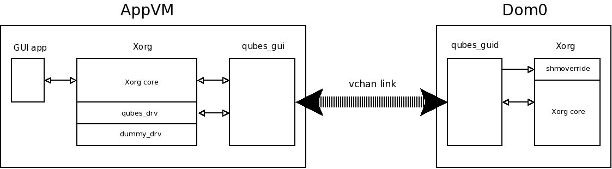

GUI virtualization
qubes-gui and qubes-guid processes
All AppVM X applications connect to local (running in AppVM) Xorg servers that use the following “hardware” drivers:
dummyqsb_drv- video driver, that paints onto a framebuffer located in RAM, not connected to real hardwarequbes_drv- it provides a virtual keyboard and mouse (in fact, more, see below)
For each AppVM, there is a pair of qubes-gui (running in AppVM) and qubes-guid (running in the AppVM’s GuiVM, dom0 by default) processes connected over vchan. The main responsibilities of qubes-gui are:
call XCompositeRedirectSubwindows on the root window, so that each window has its own composition buffer
instruct the local Xorg server to notify it about window creation, configuration and damage events; pass information on these events to dom0
receive information about keyboard and mouse events from dom0, tell
qubes-drvto fake appropriate eventsreceive information about window size/position change, apply them to the local window
The main responsibilities of qubes-guid are:
create a window in dom0 whenever an information on window creation in AppVM is received from
qubes-guiwhenever the local window receives XEvent, pass information on it to AppVM (particularly, mouse and keyboard data)
whenever AppVM signals damage event, tell local Xorg server to repaint a given window fragment
receive information about window size/position change, apply them to the local window
Note that keyboard and mouse events are passed to AppVM only if a window belonging to this AppVM has focus. AppVM has no way to get information on keystrokes fed to other AppVMs (e.g. XTEST extension will report the status of local AppVM keyboard only) or synthesize and pass events to other AppVMs.
Window content updates implementation
Typical remote desktop applications, like VNC, pass information on all changed window content in-band (say, over tcp). As that channel has limited throughput, this impacts video performance. In the case of Qubes, qubes-gui does not transfer all changed pixels via vchan. Instead, for each window, upon its creation or size change:
Old
qubes-guiversions will askqubes-drvdriver for the list of physical memory frames that hold the composition buffer of a window, and pass this to dom0 via the deprecatedMFNDUMPmessage.New
qubes-guiversions will rely onqubes-drvhaving allocated memory using gntalloc, and then pass the grant table indexes gntalloc has chosen to the GUI daemon using theWINDOW_DUMPmessage.
Now, qubes-guid has to tell the dom0 Xorg server about the location of the buffer. There is no supported way (e.g. Xorg extension) to do this zero-copy style. The following method is used in Qubes:
in dom0, the Xorg server is started with
LD_PRELOAD-ed library namedshmoverride.so. This library hooks all function calls related to shared memory.qubes-guidcreates a shared memory segment, and then tells Xorg to attach it viaMIT-SHMextensionwhen Xorg tries to attach the segment (via glibc
shmat)shmoverride.sointercepts this call and instead maps AppVM memory viaxc_map_foreign_pagesfor the deprecatedMFNDUMPmessage, orxengnttab_map_domain_grant_refsfor theWINDOW_DUMPmessage.afterwards, we can use MIT-SHM functions, such as
XShmPutImage, to draw onto a dom0 window.XShmPutImagewill paint with DRAM speed, and many drivers use DMA to make this even faster.
The important detail is that xc_map_foreign_pages verifies that a given mfn range actually belongs to a given domain id (and the latter is provided by trusted qubes-guid). Therefore, rogue AppVM cannot gain anything by passing crafted mnfs in the MFNDUMP message. Similarly, xengnttab_map_domain_grant_refs will only map grants from the specific domain ID specified by qubes-guid, so crafted WINDOW_DUMP messages are not helpful to an attacker.
To sum up, this solution has the following benefits:
window updates at DRAM speed
no changes to Xorg code
minimal size of the supporting code
There are two reasons that WINDOW_DUMP is preferred over MFNDUMP:
xc_map_foreign_pagescan only be used by dom0, as it allows accessing all memory of any VM. Allowing any VM other than dom0 to do this would be a security vulnerability.xc_map_foreign_pagesrequires the guest physical address of the pages to map, but normal userspace processes (such asqubes-guior Xorg) do not have access to that information. Therefore, the translation is done via theu2mfnout-of-tree kernel module.
Currently, using WINDOW_DUMP does come at a performance cost, because the AppVM’s X server must copy the pages from the application to the gntalloc-allocated memory. This will be solved by future improvements to gntalloc, which will allow exporting any page via gntalloc, including memory shared by another process.

Security markers on dom0 windows
It is important that the user knows which AppVM a given window belongs to. This prevents a rogue AppVM from painting a window pretending to belong to other AppVM or dom0 and trying to steal, for example, passwords.
In Qubes, a custom window decorator is used that paints a colourful frame (the colour is determined during AppVM creation) around decorated windows. Additionally, the window title always starts with [name of the AppVM]. If a window has an override_redirect attribute, meaning that it should not be treated by a window manager (typical case is menu windows), qubes-guid draws a two-pixel colourful frame inside it manually.
Clipboard sharing implementation
Certainly, it would be insecure to allow AppVM to read/write the clipboards of other AppVMs unconditionally. Therefore, the following mechanism is used:
there is a “qubes clipboard” in dom0 - its contents are stored in a regular file in dom0 as
/run/qubes/qubes-clipboard.bin.if the user wants to copy local AppVM clipboard to qubes clipboard, she must focus on any window belonging to this AppVM, and press Ctrl-Shift-C. This combination is trapped by
qubes-guid, andCLIPBOARD_REQmessage is sent to AppVM.qubes-guiresponds withCLIPBOARD_DATAmessage followed by clipboard contents.the user focuses on other AppVM window, presses Ctrl-Shift-V. This combination is trapped by
qubes-guid, andCLIPBOARD_DATAmessage followed by qubes clipboard contents is sent to AppVM;qubes-guicopies data to the local clipboard, and then user can paste its contents to local applications normally.a supplementary JSON metadata file will be saved as
/run/qubes/qubes-clipboard.bin.metadataon global clipboard copy or paste actions. Explanation of each field is available inxside.hheader file ofqubes-guidunderclipboard_metadatastructure. While the output fromqubes-guidis fully JSON compatible, thequbes-guidparser is limited. It expects line breaks after each key-value pair and only one key-value pair per line. Opening and closing curly braces should be on their own lines. There should be no leading white-space.
This way, the user can quickly copy clipboards between AppVMs. This action is fully controlled by the user, it cannot be triggered/forced by any AppVM.
qubes-gui and qubes-guid code notes
Both applications are structured similarly. They use select function to wait for any of these two event sources:
messages from the local X server
messages from the vchan connecting to the remote party
The XEvents are handled by the handle_xevent_eventname function, and messages are handled by handle_messagename function. One should be very careful when altering the actual select loop, because both XEvents and vchan messages are buffered, and select will not wake for each message.
If one changes the number/order/signature of messages, one should increase the QUBES_GUID_PROTOCOL_VERSION constant in messages.h include file.
qubes-guid writes debugging information to /var/log/qubes/qubes.domain_id.log file; qubes-gui writes debugging information to /var/log/qubes/gui_agent.log. Include these files when reporting a bug.
AppVM -> GuiVM messages
Proper handling of the below messages is security-critical. Note that all messages except for CLIPBOARD, MFNDUMP, and WINDOW_DUMP have fixed size, so the parsing code can be small.
The override_redirect window attribute is explained at Override Redirect Flag. The transient_for attribute is explained at transient_for attribute.
Window manager hints and flags are described in the Extended Window Manager Hints (EWMH) spec, especially under the _NET_WM_STATE section.
Each message starts with the following header:
struct msghdr {
uint32_t type;
uint32_t window;
/* This field is intended for use by GUI agents to skip unknown
* messages from the (trusted) GUI daemon. GUI daemon, on the other
* hand, should never rely on this field to calculate the actual len
* of message to be read, as the (untrusted) agent can put whatever
* it wants here! */
uint32_t untrusted_len;
};
This header is followed by message-specific data:
Message name |
Structure after header |
Action |
|---|---|---|
MSG_CLIPBOARD_DATA |
amorphic blob (in protocol before 1.2, length determined by the “window” field, in 1.2 and later - by untrusted_len in the header) |
Store the received clipboard content (not parsed in any way) |
MSG_CREATE |
struct msg_create {
uint32_t x;
uint32_t y;
uint32_t width;
uint32_t height;
uint32_t parent;
uint32_t override_redirect;
};
|
Create a window with given parameters |
MSG_DESTROY |
None |
Destroy a window |
MSG_MAP |
struct msg_map_info {
uint32_t transient_for;
uint32_t override_redirect;
};
|
Map a window with given parameters |
MSG_UNMAP |
None |
Unmap a window |
MSG_CONFIGURE |
struct msg_configure {
uint32_t x;
uint32_t y;
uint32_t width;
uint32_t height;
uint32_t override_redirect;
};
|
Change window position/size/type |
MSG_MFNDUMP |
struct shm_cmd {
uint32_t shmid;
uint32_t width;
uint32_t height;
uint32_t bpp;
uint32_t off;
uint32_t num_mfn;
uint32_t domid;
uint32_t mfns[0];
};
|
Retrieve the array of mfns that constitute the composition buffer of a remote window. The “num_mfn” 32bit integers follow the shm_cmd structure; “off” is the offset of the composite buffer start in the first frame; “shmid” and “domid” parameters are just placeholders (to be filled by |
MSG_SHMIMAGE |
struct msg_shmimage {
uint32_t x;
uint32_t y;
uint32_t width;
uint32_t height;
};
|
Repaint the given window fragment |
MSG_WMNAME |
struct msg_wmname {
char data[128];
};
|
Set the window name. Only printable characters are allowed, and by default non-ASCII characters are not allowed. |
MSG_DOCK |
None |
Dock the window in the tray |
MSG_WINDOW_HINTS |
struct msg_window_hints {
uint32_t flags;
uint32_t min_width;
uint32_t min_height;
uint32_t max_width;
uint32_t max_height;
uint32_t width_inc;
uint32_t height_inc;
uint32_t base_width;
uint32_t base_height;
};
|
Size hints for window manager |
MSG_WINDOW_FLAGS |
struct msg_window_flags {
uint32_t flags_set;
uint32_t flags_unset;
};
|
Change window state request; fields contains bitmask which flags request to be set and which unset |
MSG_CURSOR |
struct msg_cursor {
uint32_t cursor;
};
|
Update cursor pointer for a window. Supported cursor IDs are default cursor (0) and X Font cursors (with 0x100 bit set). |
MSG_WMCLASS |
struct msg_wmclass {
char res_class[64];
char res_name[64];
};
|
Set the WM_CLASS property of a window. |
MSG_WINDOW_DUMP |
struct msg_window_dump_hdr {
uint32_t type;
uint32_t width;
uint32_t height;
uint32_t bpp;
};
|
Header for shared memory dump command of type hdr.type. Currently only |
WINDOW_DUMP_TYPE_GRANT_REFS |
struct msg_window_dump_grant_refs {
uint32_t refs[0];
};
|
Grant references that should be mapped into the compositing buffer. |
GuiVM -> AppVM messages
Proper handling of the below messages is NOT security-critical.
Each message starts with the following header
struct msghdr {
uint32_t type;
uint32_t window;
};
The header is followed by message-specific data:
Message name |
Structure after header |
Action |
|---|---|---|
MSG_KEYPRESS |
struct msg_keypress {
uint32_t type;
uint32_t x;
uint32_t y;
uint32_t state;
uint32_t keycode;
};
|
Tell |
MSG_BUTTON |
struct msg_button {
uint32_t type;
uint32_t x;
uint32_t y;
uint32_t state;
uint32_t button;
};
|
Tell |
MSG_MOTION |
struct msg_motion {
uint32_t x;
uint32_t y;
uint32_t state;
uint32_t is_hint;
};
|
Tell |
MSG_CONFIGURE |
struct msg_configure {
uint32_t x;
uint32_t y;
uint32_t width;
uint32_t height;
uint32_t override_redirect;
};
|
Change window position/size/type |
MSG_MAP |
struct msg_map_info {
uint32_t transient_for;
uint32_t override_redirect;
};
|
Map a window with given parameters |
MSG_CLOSE |
None |
send wmDeleteMessage to the window |
MSG_CROSSING |
struct msg_crossing {
uint32_t type;
uint32_t x;
uint32_t y;
uint32_t state;
uint32_t mode;
uint32_t detail;
uint32_t focus;
};
|
Notify window about enter/leave event |
MSG_FOCUS |
struct msg_focus {
uint32_t type;
uint32_t mode;
uint32_t detail;
};
|
Raise a window, XSetInputFocus |
MSG_CLIPBOARD_REQ |
None |
Retrieve the local clipboard, pass contents to gui-daemon |
MSG_CLIPBOARD_DATA |
amorphic blob |
Insert the received data into local clipboard |
MSG_EXECUTE |
Obsolete |
Obsolete, unused |
MSG_KEYMAP_NOTIFY |
unsigned char remote_keys[32]; |
Synchronize the keyboard state (key pressed/released) with dom0 |
MSG_WINDOW_FLAGS |
struct msg_window_flags {
uint32_t flags_set;
uint32_t flags_unset;
};
|
Window state change confirmation |
KEYPRESS, BUTTON, MOTION, FOCUS messages pass information extracted from dom0 XEvent; see appropriate event documentation.